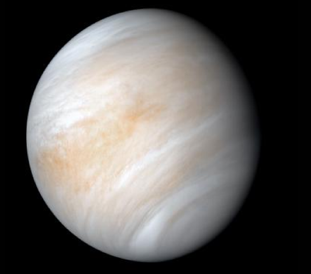
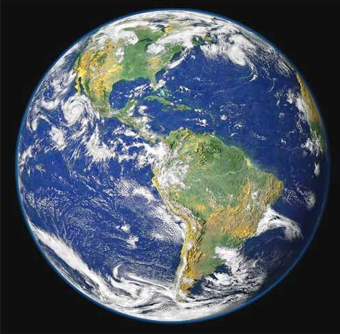
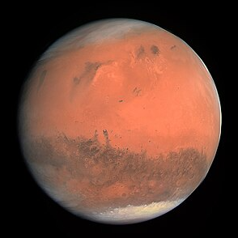
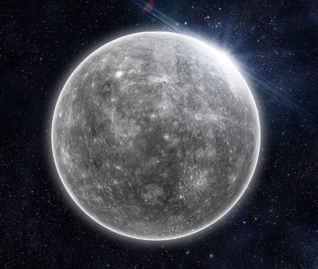
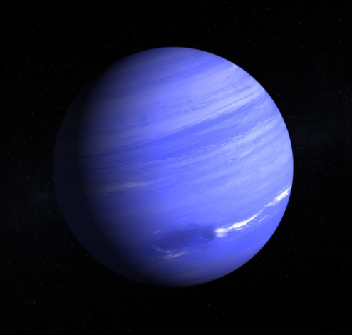
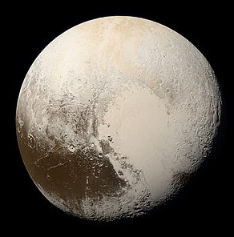
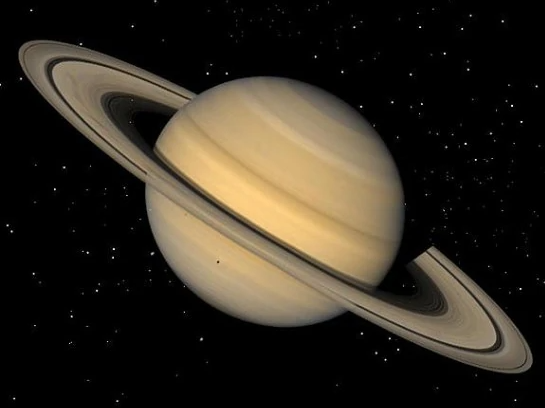
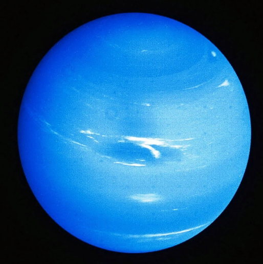
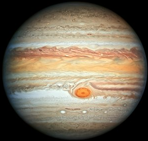

Знайомство із Сонячною системою
Сонце
Венера
Земля
Марс
Меркурій
Нептун
Плутон
Сатурн
Уран
Юпітер

На головну

Тисячі років люди вдивлялися в нічне небо. Вони помічали, як яскраві вогники рухаються по небу, і мріяли хоч щось дізнатися про них. Вивчення планет почалося давно, коли перші астрономи помітили, що п'ять зірок (планети, які можна бачити без телескопа) яскравіші за інші.
Стародавні греки саме ці зірки й назвали планетами, що означає «мандрувати».
Римляни називали ці п'ять планет на честь своїх богів:
- Меркурій;
- Венера;
- Марс;
- Юпітер;
- Сатурн.
Інші планети відкрили пізніше.
Закони руху планет навколо Сонця відкрив німецький учений Йоган Кеплер, а пояснив цей рух Ісак Ньютон. Саме завдяки дії на планети сил всесвітнього тяжіння, вони не можуть полетіти в космічний простір, а рухаються навколо Сонця по еліптичних орбітах.
9 планет, що обертаються навколо Сонця, і саме Сонце утворюють Сонячну систему.
Одна з планет Сонячної системи більша за нашу Землю в 11 разів, а інша – розміром із Місяць. Одна планета оточена кільцями льоду, а на іншій температура поверхні сягає 482 °С. У однієї планети є 21 супутник, подібний до нашого місяця, а деякі взагалі не мають супутників. Деякі тверді й кам'янисті, інші складаються з газу.
Сучасні вчені поділили планети на зовнішні та внутрішні
Внутрішні планети називають земними, оскільки вони щільні, кам'янисті й тверді. До цієї групи планет належать:
1. Меркурій;
2. Венера;
3. Земля;
4. Марс.
 Зовнішні планети газоподібні, вони більші за розміром за земні, але менш тверді. До зовнішніх планет належать:
Зовнішні планети газоподібні, вони більші за розміром за земні, але менш тверді. До зовнішніх планет належать:
5. Юпітер;
6. Сатурн;
7. Уран;
8. Нептун.
9. Плутон.
Остання зовнішня планета – Плутон – найбільш унікальна, оскільки вона не земна і не газоподібна.